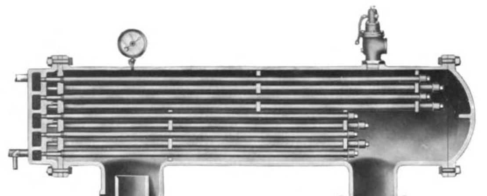

class: center, middle # Dynamic web pages without Javascript<br />  <!--- Image in the public domain ---> ## Tim Bell<br /> <timothybell@gmail.com><br /> @timb07 .footnote[<span style="font-size: 18px"> </span>] --- class: center, middle # Dynamic web pages without<sup>*</sup> Javascript<br /> ## Tim Bell<br /> <timothybell@gmail.com><br /> @timb07 .footnote[<span style="font-size: 18px"> <sup>*</sup>_Okay, there's Javascript, you just don't have to write it yourself_</span>] ??? Okay, there's Javascript, you just don't have to write it yourself --- # Scenario ??? Let's say that you're new to web development, new to Django, and maybe even new to Python. -- * new to web development and Django ??? You've just completed the Django tutorial, or done a DjangoGirls session. You've made a web app, but it's a web 1.0 app. -- * Very web 1.0: * no interaction on a single page * whole page loads ??? When you enter data in a form, nothing happens until you click the submit button. When you're searching for something, there aren't any search suggestions. It's all a bit last decade. But you don't know (or don't like) Javascript. (Who does???) -- ## Non-solutions * ~~React~~ * ~~Vue.js~~ ??? So that rules out frameworks like React and Vue.js; also, they're not the next logical step for someone just starting out with web development or Django. What to do??? --- # Solution Intercooler! .center[] ??? That's a cross-section view of an intercooler from a Ingersoll-Rand Class AA-2 air compressor from 1910, according to the Wikipedia page on intercoolers. But that's not what I'm here to talk about. --- # Solution Intercooler.js! (http://intercoolerjs.org/) .center[] ??? Or just Intercooler for short. -- * A Javascript library… -- * … but you don't need to write Javascript -- * … most of the time. --- # How? ??? How does it work? -- * HTTP requests via AJAX when particular events occur * Response replaces contents of element * Specified by HTTP element attributes, not Javascript ??? What Intercooler does is send HTTP requests via AJAX when particular events, like interacting with a link or form, occur. Intercooler then takes the response to the HTTP request, and replaces the content of an HTML element, either the element the event was triggered on, or another element you specify. You tell Intercoooler what to do, that is, what events to trigger on and on what elements, and what HTTP request to send, using HTTP element attributes. --- # Example A normal link: ```html <a href="/click">Click me!</a> ``` ??? Let's see what that looks like in HTML. The fundamental building block of the web is the hypertext link, an HTML "a" element. When you click the link, you go to the page specified in the URL. -- Using Intercooler to change the behaviour: ```html <a ic-post-to="/click">Click me!</a> ``` ??? Here's an "a" link, except instead of having an "href" attribute, it has this funny "ic-post-to" attribute. When you click the link, Intercooler sends a POST request to the URL in the attribute value. And whatever response comes back replaces the "Click Me!" text in the element. And unlike a normal link, you stay on the same page. -- so when it's clicked it becomes: ```html <a ic-post-to="/click">You clicked me</a> ``` ??? Where the text "You clicked me" is what was in the response received from the server. --- # No Javascript! Only what's in here: ```html <script src="https://code.jquery.com/jquery-3.1.1.min.js"></script> <script src="https://intercoolerreleases-leaddynocom.netdna-ssl.com/ intercooler-1.2.1.min.js"></script> ``` -- There's a Django app `django-intercoolerjs` (https://github.com/brejoc/django-intercoolerjs) which bundles the above jQuery and intercooler JS files so they can be loaded as static files like this: ```html {% load static %} <script src="{% static 'intercoolerjs/js/jquery.js' %}"></script> <script src="{% static 'intercoolerjs/js/intercooler.min.js' %}"></script> ``` --- # WOW!!!!!! Trivial example is trivial -- What about… * Request inputs (form data, etc.)? * Response handling? * DOM and styling changes? * Data dependencies? ??? Let's look at a more complicated example that demonstrates a bit more of what Intercooler can do. --- layout: true # Example: form field validation --- ## Validate an email address when it changes ??? Here's an example where we're using Intercooler to validate the email address that's entered, but without the form actually being submitted. --- ## Invalid email address ??? An invalid email address results in the input and label turning red, and an error message being displayed. Note that after entering the text, I tabbed out of the input element, which is why the "Submit" button is selected. But I didn't click "Submit". --- ## Email address already used ??? A different issue returns a different error message. --- ## Success! ??? And finally a valid email address results in the input and label turning green. Let's see how this is done with a Django view and Django templates. --- ```py from django.core.validators import validate_email, ValidationError def contact_email_view(request): email = request.POST["email"] context = {"email": email} try: validate_email(email) except ValidationError: context["error_message"] = "Please enter a valid email address" else: if email != "test@test.com": context["error_message"] = "That email is already taken. Please enter another email." else: context["form_group_class"] = "has-success" if "error_message" in context: context["form_group_class"] = "has-error" return render(request, "examples/form_group.html", context=context) ``` ??? This is the Django view for the email validation example. It assumes that there's a "validate_email()" function, and also that the only available email address is "test@test.com". It's a completely normal Django view to process a form POST request (except we're not using Django's form handling features). --- ## template: inlinevalidation.html ```html <form> {% csrf_token %} {% include 'examples/form_group.html' %} <button class="btn btn-default">Submit</button> </form> ``` ??? This is the main template for the email validation page. It's just a form with a CSRF token, a submit button, and in between, we're including another template. --- ## template: form_group.html ```html <div class="form-group {{ form_group_class }}"> <label class="control-label"> Email Address </label> <input class="form-control" name="email" ic-post-to="{% url 'contact-email' %}" ic-target="closest div" ic-replace-target="true" value="{{ email }}" > {% if error_message %} <span class="help-block text-error">{{ error_message }}</span> {% endif %} </div> ``` ??? Here's the template included by the previous template. This is the interesting bit. First up there's a "div". We're using a Django template variable to set one of the classes on the div, depending on whether there was an error or success. With our style sheet, that renders the form in red for an error, or green for success. The next interesting part is the "input" element. This is where all the Intercooler attributes that control the behaviour are. "ic-post-to" works the same way as in the previous example: it's just specifying what URL to send the POST request to. "ic-target" specifies a different target to the default (which is the HTML element containing the Intercooler directive); here we've specified the "closest div", which in this case is the surrounding "div". "ic-replace-target" says that instead of replacing what's between the opening and closing "div" tags, replace the entire target, including the tags. So we'll end up replacing the entire content of this template with whatever we get back from as the response to the POST request. And if you remember from two slides back, the view that handles this request uses this template in its "render" response. --- layout: false # Questions ??? We looked at how targets are specified in that example, but there are some further questions that need answering. -- * How does Intercooler determine when to trigger a request? -- * What data does Intercooler send with the request? --- # Triggering Intercooler requests ??? We saw in the previous example that the Intercooler request was triggered when we left the input field, either by tabbing out, or clicking outside it. -- Intercooler uses the "natural" event for an element to trigger a request: * For form elements, issue the request on the `submit` event. * For input elements except buttons, issue the request on the `change` event. * For all other elements, including buttons, issue the request on the `click` event. -- Other triggers can be specified using `ic-trigger-on`. For example: * `mouseenter` * `keyup` * any other jQuery events --- # Data sent with a request -- * form data ??? When a request is triggered by an input element in a form, the entire form data is sent along with the request, just as if the form had been submitted. In the email validation example, the CSRF token input element was part of the same form as the input element that triggered the request, so the CSRF token was sent along with the request. -- * `ic-include` ??? Values from different forms (or any other element) can be added to the request by specifying them using a jQuery selector with "ic-include". That might be useful if you want to send a POST request but not within a form, and so need to include a CSRF token input element explicitly. -- * parameters (e.g. `ic-element-id`) ??? The parameters include information about the element that the request was triggered from and the target element, among others. --- # Example: to-do list ??? A to-do list may seem like another trivial example, but it illustrates one of the most powerful ideas behind Itercooler. -- ## template: task_list.html ```html <form> {% csrf_token %} {% for task in tasks %} {% include 'examples/task.html' %} {% endfor %} </form> ``` ??? Here's the main template, which is quite similar to the email validation example. Note that we're once again including another template, this time within a loop that iterates over the tasks. --- # Example: to-do list ## template: task.html ```html <div class="form-group"> <input type="checkbox" id="{{ task.id }}" {% if task.done %}checked{% endif %} ic-post-to="{% url 'tasks-update' %}" ic-target="closest div" ic-replace-target="true"> <label for="{{ task.id }}">{{ task.name }}</label> </div> ``` ??? The input element will have the "checked" attribute if the task has been done, or otherwise it will display as being unchecked. "ic-target" and "ic-replace-target" have the same values as the previous example, which together specify that the response from the server should replace the entire "div" of this form group. --- # Example: to-do list -- ??? When the task list is first displayed, the task isn't done. -- ```py task.done = True task.save() ``` ??? If you click on the check box, Intercooler sends a POST request with the form data. In the view, the state of the task is updated via some Python code a bit like this. Then the view renders the template again and returns it as the response. -- --- # Philosophy > It can be easy for some developers to dismiss intercooler as overly simple and an archaic way of building web applications. This is intellectually lazy. > > Intercooler is a tool for returning to the original network architecture of the web. Using HTML as the data transport in communication with a server is what enables HATEOAS, the core distinguishing feature of that network architecture. Intercooler goes with the grain of the web, rather than forcing a more traditional thick-client model onto it, thereby avoiding the complexity and security issues that come along with that model. > > Yes, intercooler is simple, but it is a deceptive simplicity, very much like the early web. http://intercoolerjs.org/docs.html#philosophy --- # On Churn > Many javascript projects are updated at a dizzying pace. Intercooler is not. > > This is not because it is dead, but rather because it is (mostly) right: the basic idea is right, and the implementation at least right enough. > > This means there will not be constant activity and churn on the project, but rather a stewardship relationship: the main goal now is to not screw it up. The documentation will be improved, tests will be added, small new delarative features will be added around the edges, but there will be no massive rewrite or constant updating. This is in contrast with the software industry in general and the front end world in particular, which has comical levels of churn. > > Intercooler is a sturdy, reliable tool for web development. http://intercoolerjs.org/docs.html#philosophy --- # A Few Reasons To Try Intercooler In 2018 http://intercoolerjs.org/2018/01/04/a-few-reasons-to-try-intercooler-in-2018.html ??? I'll finish with a few reasons to try Intercooler, taken from a blog post by the author of Intercooler. -- * Intercooler is incremental ??? Intercooler is incremental; that means that you can add it to an existing web application where you want to very easily. -- * Intercooler is language [backend] agnostic ??? Intercooler doesn't care what the backend server is, just that it speaks HTTP. So it works very well with Django, but it could also work with Flask, or a web application in a language that isn't Python. :-) -- * Intercooler trivially satisfies REST ??? REST, or "REpresentation State Transfer", is one of the key architectural concepts behind the web. -- ### Conclusion “I hope you find some of these reasons to look at intercooler compelling and decide to give it a try in 2018. It obviously goes against the grain of a lot of web development being done today and it certainly isn’t right for every project, but I think there are some real advantages to its approach for many web applications.” ??? I'll finish with a quote from the blog post linked above. --- # Resources * http://intercoolerjs.org/ * https://petercuret.com/add-ajax-to-django-without-writing-javascript/ * https://github.com/brejoc/django-intercoolerjs * https://github.com/kezabelle/django-intercoolerjs-helpers ??? Here are some resources you may like to investigate after this talk. First is the Intercooler website, which has excellent documentation as well as many examples of the types of dynamic interaction possible. Next is an excellent article on implementing search autocomplete functionality with Django and Intercooler. Finally a couple of Django apps for working with Intercooler; the first I already mentioned, and unfortunately there wasn't time to cover the second one in this talk. --- # Thanks! ## <timothybell@gmail.com> ## @timb07